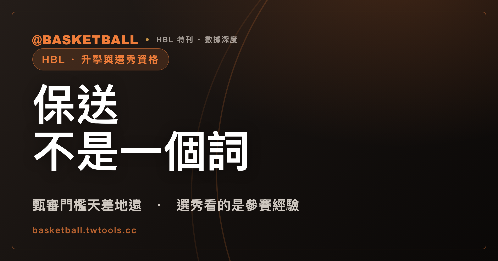

「保送」不是一個詞，是四條不同的路：HBL 球員的甄審、甄試與選秀資格
球迷口中的「保送」，法規裡沒有這兩個字。中等以上學校運動成績優良學生升學輔導辦法（H0120004）只定義「甄審」「甄試」「單獨招生考試」「大學轉學考試」四種方式，門檻高低差很大；HBL 甲級球員可能對到的是門檻較低的「甄試」（文字高度對應下的推論，非逐字明定），之後能不能參加 TPBL 選秀，靠的又是另一套獨立的參賽經驗規定。

新手村｜HBL・升學與選秀資格
「這個球員被保送 OO 大學了」是轉播與新聞裡常聽到的說法。但翻開「中等以上學校運動成績優良學生升學輔導辦法」（以下簡稱 H0120004），全文查不到「保送」兩個字。這部辦法是全國性、跨運動項目的升學輔導辦法，不是 HBL 專屬法規，正式用語只有「甄審」「甄試」「單獨招生考試」「大學轉學考試」四種；HBL 甲級球員可能對到的是門檻較低的「甄試」（詳見下文，這是文字高度對應下的推論，不是條文逐字寫死的等式）。
「保送」是媒體與坊間對這幾種程序的籠統慣稱，不是法規用語，行文時可以用來起頭，但要落實回正式名稱才看得出門檻差在哪裡。這篇文章要拆的，是 HBL 甲級球員實際上能對到哪一種、門檻多高，以及升學這條路和「能不能參加職籃選秀」是不是同一件事。
法規定義的四種升學方式，門檻不是同一回事
H0120004 第 3 條規定，運動成績優良學生升學共有四種方式：甄審，依招生學校名額，按運動成績及志願分發入學；甄試，依招生學校名額，按術科等成績檢定通過後分發入學；此外還有單獨招生考試與大學轉學考試。四種方式的申請門檻各自獨立，門檻由不同條文分別規定，不是同一組資格可以四種都用。
這部辦法的適用對象是「中等以上學校運動成績優良學生」全體，第 2 條列出國民中學、高級中等學校、專科學校三類學生，涵蓋所有運動項目，不限籃球，也不是專為 HBL 訂的。理解這一點，才不會把 HBL 規程裡的條文和這部辦法的條文混為一談——兩者是不同層級的文件，HBL 規程管的是聯賽本身的賽制，H0120004 管的是升學資格。
甲級最優級組前八名，對應的是門檻較低的「甄試」
H0120004 第 6 條列出可以申請「甄試」的六款資格，其中第 5 款寫的是「本部核定辦理之中等學校運動聯賽：最優級組前八名」。HBL 114 學年度競賽規程第 1 條寫明，這項聯賽是由「運動部」核定辦理。「運動部核定辦理之中等學校運動聯賽」與條文裡「本部核定辦理之中等學校運動聯賽」，文字上高度對應。
這裡要說清楚的是，這個對應是合理推論，不是法規逐字寫死的等式。H0120004 條文寫的是「本部」，沒有一條逐字寫明「本部」是否包含「運動部」；同樣地，「最優級組」是條文用語，本文依 HBL 規程判讀為「甲級聯賽」，但 H0120004 本身也沒有逐字定義「最優級組」等於哪一個聯賽組別。兩個銜接都查無明文條款，只能靠文字高度對應與行政脈絡合理推得。行文用「對應」「可能適用」比較準確，寫成「甲級前八名就是甄試資格」這種確定語氣，等於把推論講成了法規原文。
法條本身也沒有區分男生組或女生組，第 6 條第 5 款「最優級組前八名」一體適用；至於甲級以外的乙級聯賽是否也有對應的甄試門檻，公開資料查無明確條文，本文不在此推測。
「甄審」門檻高得多，要代表國家隊打國際賽
同一部辦法裡，第 4 條規定的「甄審」資格門檻完全是另一個等級：依「國家代表隊教練與選手選拔培訓及參賽處理辦法」，代表國家參加奧運、亞運等國際賽會，並取得名次，才能申請甄審。奧運不限名次，亞運要求奧運項目前八名、非奧運項目前六名——這是「代表國家隊出賽並拿到成績」的門檻，跟「在國內高中聯賽打進前八名」完全是兩件事。
換句話說，「甄審」與「甄試」雖然都出現在同一份升學輔導辦法裡，申請條件卻天差地遠。甄試對應的是國內學生聯賽的名次，甄審對應的是代表國家出國比賽的成績。HBL 甲級球員即使打進最優級組前八名，可能對到的也是門檻較低的甄試，而不是甄審——法規本身沒有一款是用「國內高中聯賽名次」去申請甄審的。
拿到甄試門檻，不等於拿到某個固定加分比例
符合資格只是申請資格的第一步，接下來的加分比例並不是名次自動換算出來的數字。H0120004 第 15 條把運動成績加分比例分成六級，從第一級 50% 到第六級 5%。但第 16 條與第 18 條規定，這個等級是由「審議小組」評定的，審議小組由學者專家、社會公正人士，以及體育運動團體、學校與機關代表組成，負責審議甄審與甄試的申請案。
也就是說，拿到「甲級最優級組前八名」這個門檻，代表的是取得申請甄試的資格，不代表自動對應某一個固定的加分百分比。名次和加分等級之間隔著一道審議程序，不是門檻一符合，百分比就自動跳出來。
大學轉學考試加分，走的是 UBA 之後的路，不是 HBL 球員的直接路徑
H0120004 第 20 條另外規定了大學轉學考試的加分辦法，最高不逾總分 10%。其中一項適用條件是「代表學校參加大專校院運動聯賽，獲得最優級組前六名」——這裡的「大專校院運動聯賽」指的是大專籃球聯賽（UBA），不是 HBL。這一條銜接的是已經升上大學、以大專球員身分報考轉學考的加分依據，跟還在念高中的 HBL 球員沒有直接關係。
換句話說，這條路徑是「先升大學、打 UBA，之後再用轉學考加分」的路，不是 HBL 球員高三畢業當下能直接使用的條款。把四條路徑放在一起看，才看得出升學制度其實是分階段的：甄審、甄試對應的是高中階段的升學，轉學考加分對應的是已在大學就讀之後的另一段路。
| 方式 | 依據條文 | 資格門檻 | 對 HBL 球員的意義 |
|---|---|---|---|
| 甄審 | H0120004 第 4 條 | 代表國家隊參加國際賽會並取得名次 | 門檻遠高於 HBL 甲級名次，一般聯賽戰績用不到這一款 |
| 甄試 | H0120004 第 6 條第 5 款 | 本部核定辦理之中等學校運動聯賽：最優級組前八名 | 與 HBL 甲級最優級組前八名文字高度對應（屬推論，非逐字明定） |
| 單獨招生考試 | H0120004 第 3 條 | 依招生學校自訂簡章 | 依各校簡章另行規定，門檻不在本文討論範圍 |
| 大學轉學考試 | H0120004 第 20 條 | 代表學校參加大專校院運動聯賽（UBA），獲最優級組前六名等條件之一 | 適用對象是已升大學打 UBA 的球員，不是 HBL 在學球員的直接路徑 |
進 TPBL 選秀，看的是「打過甲級預賽」，不是名次或獎項
升學資格談完，另一個常被混在一起問的問題是：打過 HBL 甲級，是不是就代表能參加職籃選秀？答案要拆開看，因為這是完全獨立的一套規則。
以 2026 屆 TPBL 新人選秀會公告為準，資格條件之一是「曾參加 HBL 高中甲級籃球聯賽預賽者」。這一句話的門檻是「打過預賽」這個參賽經驗，沒有要求名次、沒有要求獎項，跟前面談的甲級最優級組前八名是兩回事——一個人不必打進甲級前八名，只要參加過甲級預賽，就符合這項選秀資格條件。年齡門檻另外規定：一般球員應於 2026 年 12 月 31 日前年滿 19 歲；若是 UBA 在學學生，則應於 2026 年 8 月 31 日前年滿 21 歲，或完成大學三年級以上學業。這是 2026 屆的公告內容，逐年選秀公告可能調整條件與年齡門檻，查證當屆最新公告以官方公告為準。
PLG 2026-27 屆選秀辦法的用詞不太一樣：條文寫的是「曾註冊於臺灣地區之高中籃球甲級聯賽或大專籃球聯賽公開一級之本土球員」，沒有「預賽」兩個字，也沒有直接點名「HBL」。兩個聯盟的條文措辭不同，不能假設規則完全一樣，實際細節與逐屆調整，可以參考站內TPBL 與 PLG 選秀規則怎麼比。
這裡最容易誤解的一點是：升學那條線談的是「名次」（甲級最優級組前八名），選秀這條線談的是「參賽經驗」（打過甲級預賽）。兩者用的是不同法源、不同機構、不同門檻，一個人可能符合甄試資格但因為年齡或其他條件不符合選秀資格，反過來也一樣——名次高不代表選秀資格自動到位，選秀資格到位也不代表升學加分比例會比較高。
自己怎麼分辨甄審跟甄試
把前面幾節收攏成一個檢查方式：看到一名球員符合升學資格的新聞，第一步先問「這是靠什麼身分」。如果是代表國家隊參加奧運、亞運等國際賽會並取得名次，對到的是門檻高的甄審；如果是靠 HBL 甲級最優級組的聯賽名次，對到的是門檻較低的甄試，而且這個對應本身是文字高度一致下的合理推論，不是逐字寫死的規定。第二步再問「拿到門檻之後，加分比例是不是已經確定」——答案是沒有，加分等級要交給審議小組評定，不是名次自動換算。
第三步，如果話題轉到「能不能打職籃」，就要切換到另一套規則：看的是有沒有打過甲級預賽，而不是甲級戰績或有沒有拿過升學加分。把這三步分開問，「保送」這個籠統的說法就能拆回具體的程序名稱與各自的門檻，不會被一句話帶著走。
常見問題
HBL 甲級最優級組前八名，等於「保送」大學嗎？
不完全等於。H0120004 沒有「保送」這個法規用語，正式程序名稱是「甄審」「甄試」「單獨招生考試」「大學轉學考試」。HBL 甲級聯賽最優級組前八名，文字上與 H0120004 第 6 條第 5 款「本部核定辦理之中等學校運動聯賽：最優級組前八名」高度對應，可能適用「甄試」，而不是門檻更高的「甄審」；這個對應屬合理推論，不是條文逐字寫明的等式。法條本身不分男生組或女生組。以 114 學年度 HBL 競賽規程（由運動部核定辦理）與現行 H0120004 條文為準，2026 年 9 月 27 日查證。
「甄審」跟「甄試」的門檻差在哪裡？
差很多。「甄審」（H0120004 第 4 條）要求依國家代表隊選拔規定，代表國家參加奧運、亞運等國際賽會並取得名次；「甄試」（H0120004 第 6 條第 5 款）可能對應的是 HBL 甲級最優級組前八名這種國內學生聯賽名次（文字高度對應下的推論，非逐字明定）。兩者法源不同、門檻高低差距很大，不是同一件事的兩種說法。以現行 H0120004 條文為準，2026 年 9 月 27 日查證。
拿到甲級前八名的甄試門檻，加分比例是固定的嗎？
不是。H0120004 第 15 條把加分比例分六級（50% 至 5%），但第 16 條與第 18 條規定，加分等級要由「審議小組」評定，不是名次自動對應某個百分比。符合甄試資格門檻，只是取得申請資格，加分比例仍須經審議程序決定。以現行 H0120004 條文為準，2026 年 9 月 27 日查證。
打過 HBL 甲級聯賽，是不是就能參加 TPBL 選秀？
要看有沒有打過「預賽」，而不是有沒有打進前幾名。以 2026 屆 TPBL 新人選秀會公告為準，資格條件之一是「曾參加 HBL 高中甲級籃球聯賽預賽者」，門檻是參賽經驗，沒有名次或獎項要求；另外還有年齡門檻（一般球員 2026 年 12 月 31 日前年滿 19 歲，UBA 在學學生另有規定）。PLG 2026-27 屆選秀辦法用詞不同，寫的是「曾註冊於臺灣地區之高中籃球甲級聯賽」，沒有「預賽」字樣。逐年、逐屆選秀公告可能調整條件，查證當屆最新公告以官方公告為準。
資料來源
- 中等以上學校運動成績優良學生升學輔導辦法（H0120004）第 2、3、4、6、15、16、18、20 條：全國法規資料庫，查詢時為現行法規版本，2026 年 9 月 27 日查證。law.moj.gov.tw/LawClass/LawAll.aspx?pcode=H0120004
- HBL 114 學年度高中籃球聯賽競賽規程第 1 條（依據：運動部函核定辦理）：中華民國高級中等學校體育總會官網公告，2026 年 9 月 27 日查證。hbl.com.tw/rule
- TPBL 2026 屆新人選秀會資格與年齡條件：tpbl.basketball/draft/rules，以 2026 屆選秀公告為準，2026 年 9 月 27 日查證。
- PLG 2026-27 屆選秀辦法：pleagueofficial.com/draft/2026-27/draft-approach，以 2026-27 屆選秀辦法為準，2026 年 9 月 27 日查證。